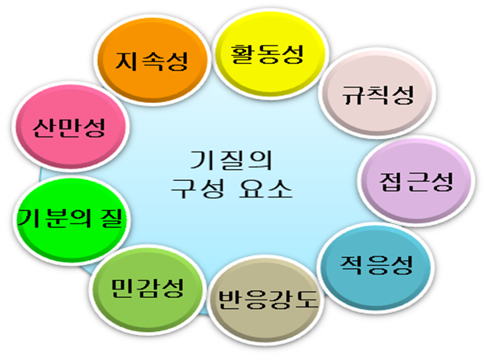
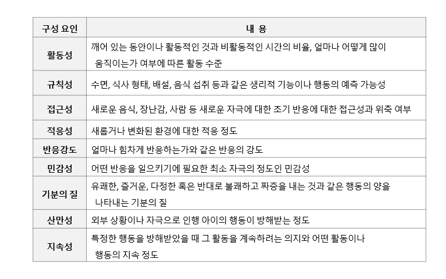

기질의 구성 요소에 적합한 양육지원
아이는 출생 후 각자의 기질적 특성에 따라 독자적인 양육이 필요하며 양육자는 기질에 적합한 방식으로 반응하고 양육하도록 노력해야 정상적 발달을 지원할 수 있다. 토마스와 체스(Thomas & Chess, 1977)는 기질 차원인 활동성, 규칙성, 접근성, 적응성, 반응강도, 민감성, 기분의 질, 산만성, 지속성으로 구성 요소를 주장하였다.
기질의 구성 요소는 다음과 같다.

이러한 구성 요소을 기초로 기질 유형은 순한(easy)기질, 까다로운(difficult)기질, 느린(slow–oto–warm–rup)기질이다.
토마스와 체스의 기질 구성 요인과 내용을 살펴보면 표와 같다.

순한 기질은 적응력이 빠르고 규칙적
순한 기질은 다루기 쉬운(easy temperament infant) 아이를 쉬운 기질이라고도 한다. 생활 리듬이 규칙적이고, 새로운 사물이나 대상에 대한 접근이 용이하며, 대체로 긍정적인 정서를 가지고, 적응력이 빠른 특징이 있다. 일상생활의 신체 리듬이 규칙적이므로 잠자고 먹는 것이 순조롭고, 비교적 잠을 쉽게 자며 깨어날 때도 기분 좋게 일어난다. 낯선 상황에도 쉽게 적응하며 외부환경 변화에 대한 반응의 강도도 그리 높지 않다.
순한 기질의 아이는 변화에 쉽게 적응하고 긍정적인 감정표현이 많고, 외부 자극에 수용 정도가 높은 장점이 있다. 장난감을 가지고 혼자서도 잘 놀며, 쉽게 당황하지 않는다. 또한 낯가림이 적고 새로운 생활 습관에 잘 적응하는 편이다. 이러한 유형의 아이들은 생활 속에서 잘 자고 잘 먹는 경향이 있으므로 양육자가 다루기 쉽다.
하지만 순한 기질의 아이라 할지라도 외부 환경이 좋지 않거나 스트레스를 많이 받으면 문제행동을 나타낸다. 순한 기질의 아이라 할지라도 아이의 반응을 무시하거나 경시하지 않도록 신경을 써야 할 것이다.
까다로운 기질은 민감하고 생활리듬이 불규칙적
까다로운 기질(difficult)은 다루기 어려운(difficult temperament) 아이로 약 10% 가량이다. 까다로운 기질의 정서적인 특성은 생활 리듬이 불규칙적이고, 새로운 것에 대한 반응이 위축적이다. 부정적인 정서표현의 강도가 높고, 새로운 환경이나 대상에 대한 적응성이 비교적 낮다. 이러한 아이들은 일반적으로 먹고 자는 것과 같은 생활 리듬이 불규칙하고 밥도 잘 먹지 않고 잠도 푹 자지 못한다.
낯선 상황에 대해서는 쉽게 위축되며 변화에 적응하는 것을 힘들어 한다. 새로운 음식에 쉽게 적응하지 못하고 소리를 지르거나 적응력이 낮은 편이다. 까다로운 기질은 정서적으로 민감하고 감정표현이 경하여 갈등을 일으키며 짜증과 공격적인 모습을 자주 나타낸다. 자신의 욕구가 좌절되면 심하게 울거나 떼를 쓰기도 하는데 이를 달래기가 쉽지 않다. 평소에도 특별한 이유 없이 칭얼대는 등 부정적인 감정표현이 많다.
까다로운 기질 아이는 생의 초기에 새로운 것에 대한 거부감을 나타내지만 일단 적응하고 나면 호기심이 많고 진취적인 장점이 있다. 까다로운 기질 아이가 바른 행동을 하면 칭찬해 주고 행동의 허용선을 명확히 그어야 한다. 전체 약 10% 정도가 까다로운 유형에 속한다. 이런 유형에 속하는 아이들은 부정적 정서를 자주 표출하며, 그 정도가 격렬한 경향이 있다. 까다로운 아이는 쉽게 울고 보채며 낯가림이 심하고, 좌절 상황에서 강한 반응을 보이기 때문에 낯선 상황에 적응할 시간이 필요하다.
느린 기질은 활동량이 적고 자극반응에 움츠림
느린 기질(slow to warm up temperament infant)은 생활 리듬을 비교적 순조롭고 먹고 자는 것이 규칙적인 편이다. 친숙하지 않은 사람이나 사물에 대해서는 쉽게 다가가지 못하지만, 시간을 주면 조심스럽지만 잘 적응한다. 새로운 자극이나 상황에 적응하는데 시간이 오래 걸린다. 느린 기질은 더딘 기질이라고도 한다. 활동량이 매우 적고 반응 강도가 낮지만 까다로운 기질처럼 소리 지르기와 떼쓰기 등 공격적인 행동보다는 다소 부드럽다.
느린 기질의 아이들이 낯선 상황이나 새로운 사람을 만났을 때 아이에게 빨리 행동하기를 강요한다면 아이는 더 위축되어 적응속도가 느려지게 된다. 또한 부정적인 자극에 대한 반응도 약해서 강하게 울기보다는 우울하거나 짜증을 내는 편이다. 밥 먹기나 옷 입기 등 일상적인 생활이 너무 느려 다른 아이와 비교하여 발달이 지연된 것으로 오해할 수도 있다.
느린 기질 아이가 새로운 변화에 직면할 때 시간제한을 두지 말고 차분하게 기다려주면서 문제 상황을 극복하도록 한다. 느린 기질은 수동적이며 새로운 상황에 대해 움츠러들지만, 기회가 주어지면 조금씩 흥미를 보인다. 이런 기질을 가진 아이에게는 외부 환경을 자주 변화시키기 보다 안정된 환경 속에서 작은 변화를 주고, 충분히 탐색할 수 있는 여유로움이 중요하다.
기질은 양육환경이 직․간접적으로 증폭
아이들의 개개인의 차이가 있듯이 발달과정에서 행동 억제와 같은 기질적 패턴이 발생한다.
일반적으로 기질은 잠재되어 상당히 안정적이지만 시간이 지남에 따라 성격의 변화를 추구한다.
기질이 정서와 행동적 형태로 표현되는 안정된 개인차라면 기질은 성장 이후 사회적 관계의 질에 영향을 미친다.
무엇보다 발달 과정에서 아이의 성격 형성에 중요한 영향을 미친다는 점에서 기질에 대한 이해는 필수적이다.
곽노의, 김경철, 김유미, 박대근(2013). 영유아발달. 양서원.
권순황, 선애순,이형선(2015), 영아발달. 양서원
김영애, 선애순, 정효정(2018). 영유아발달. 양서원
박성연(2010). 아동발달. 교문사.
정옥분(2013). 영아발달. 학지사.
2022.04.12 - [분류 전체보기] - 기질의 의의 및 특성과 부모 양육방식
기질의 의의 및 특성과 부모 양육방식
기질, 성격, 인격과의 영역 구분 기질(Temperament)이란 부모로부터 물려받은 유전적인 특성(id)를 말한다. 변화되지 않는 것으로써 사람이 부모로부터 받고 태어난 것이다. 사람은 태어난 직후 각기
think-sis.co.kr